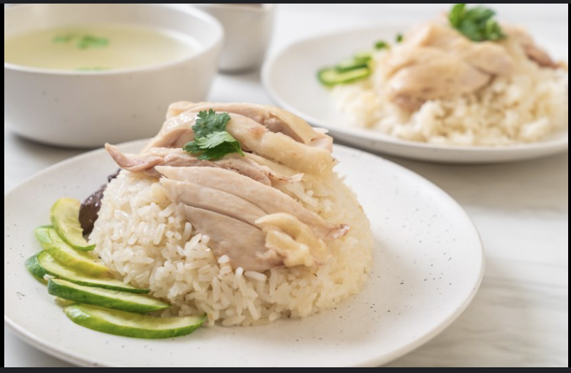

Chicken Rice

Description
Hainanese chicken rice is a beloved dish originating from Hainan province in southern China but widely popular throughout Southeast Asia, particularly in Singapore and Malaysia. This culinary delight consists of poached chicken served atop fragrant rice cooked in chicken broth, accompanied by flavorful sauces and condiments. To prepare this dish, a whole chicken is gently poached in simmering water with ginger and sometimes pandan leaves, which infuse the meat with a delicate aroma and tenderness. Once cooked, the chicken is immediately chilled in ice water to achieve a smooth and tender texture before being thinly sliced and served on a bed of warm, oil-infused rice.
The rice, a centerpiece of Hainanese chicken rice, is cooked using the chicken broth along with garlic and shallots, imparting it with a rich, savory flavor. The dish is typically accompanied by several dipping sauces, including tangy chili sauce and ginger-infused soy sauce, which add layers of zest and spice to each bite. Hainanese chicken rice is not only celebrated for its simplicity and comforting flavors but also for its versatility, making it a popular street food and a staple in both casual eateries and upscale restaurants alike across Asia and beyond.
Ingredients
- 1 large whole chicken (about 1.7 kg), at room temperature
- 5cm fresh unpeeled ginger
- 2 tsp salt
- 1/2 tsp monosodium glutamate, or 1 tsp chicken stock powder (optional)
- 1 tbsp sesame oil
- coriander, to serve
- sliced cucumber, to serve
- eschallots, roughly sliced (or 1 brown onion, roughly sliced)
- 2-3 pandan leaves (optional)
Steps
- For the ginger and spring onion oil, pound the ginger and salt to a rough paste with a heatproof mortar and pestle. Add the spring onion and pound lightly to combine. Heat the peanut oil in a small frypan until it is smoking then pour the hot oil over the ginger mixture. Stir, then set aside until ready to serve.
- For the chilli sauce, pound the chilli, ginger, garlic, sugar and salt together in a mortar and pestle until very smooth. Pounding chilli can take some time so to speed up the process you can start it in a blender or food processor and pound to finish, or grate the ingredients into the mortar using a rasp grater. Add the boiling stock to the pounded mixture. You can vary the amount of stock depending on the consistency of the chilli sauce you're after. Stir in the juice, then adjust the seasoning if necessary so that the balance of sweet, sour and salty tastes is pleasant. Heat the chicken oil in a small saucepan until hot, the pour over the chilli mixture and stir to combine.
- Remove the fat deposits from inside the cavity of the chicken, near the tail. Roughly chop the fat and place in a small frying pan over very low heat to render. Render the chicken fat, stirring occasionally for about an hour until you all the fat is rendered and the solids are crisp. Remove the solids and use them for another purpose. Reserve the chicken oil.
- To begin poaching the chicken, pound the unpeeled ginger in a mortar and pestle and add to a large pot containing about 4 litres of water, along with the tops of the spring onions used for the ginger and spring onion oil. Add the salt and MSG or chicken stock powder (if using) and bring to the boil over high heat. Taste the water and adjust the amount of salt so that it tastes savoury and a little salty. Reduce the heat to very low and add the chicken to the pot. There should be enough water in the pot so that the chicken doesn’t touch the bottom of the pot, as that will cause the skin to tear. Lift the chicken in and out of the water a couple of times to change the liquid in the chicken's cavity. If you have poultry hooks, use them to hang the chickens in the pot (see video below). The water should now be steaming but not bubbling. Keep the heat low at this level and cook the chicken for 45 minutes.
- Using the poultry hook (or slotted ladle), carefully lift the chicken out of the pan, ensuring you don’t break the skin, and plunge into a large bowl or sink of salted iced water. Reserve the stock and stand the chicken in the iced water for at least 10 minutes, turning once. This will stop the cooking and give the skin its delicious gelatinous texture. Remove from the iced water and hang over a bowl or the sink to drain well. Rub the skin all over with the sesame oil. The chicken should be cooked very lightly, pink inside the bones and with a gelatinous skin.
- To make the chicken rice, pound the garlic and eschallot (or onion) to roughly bruise with a mortar and pestle. Combine the rendered chicken oil with vegetable oil to make ½ a cup of oil. Heat in a wok over medium heat. Add the garlic and ginger stir until starting to brown, then strain through a sieve. Reserve the oil and discard the solids. Place the rice in a rice cooker or heavy-based saucepan. Add about 1.2L of the reserved stock from the chicken (strained) and the reserved flavoured chicken oil (or use the proportions as indicated on your rice cooker). Tie the pandan leaves in a knot (if using) and add to the rice. If cooking in a pot, bring to the boil over high heat and continue to boil for about 5 minutes until the level of the liquid reaches the top of the rice, then reduce the heat to very low, cover the pan with a tight fitting lid and cook for 12 minutes, then remove from the heat and stand for another 10 minutes.
- For the dressing, combine the ingredients with about half a cup of the stock from cooking the chicken. When the rice is ready, use a cleaver to slice and debone the chicken Chinese-style and pour the dressing over it. Scatter with the coriander sprigs, and serve with sliced cucumber, tomato and serve with the rice and sauces.